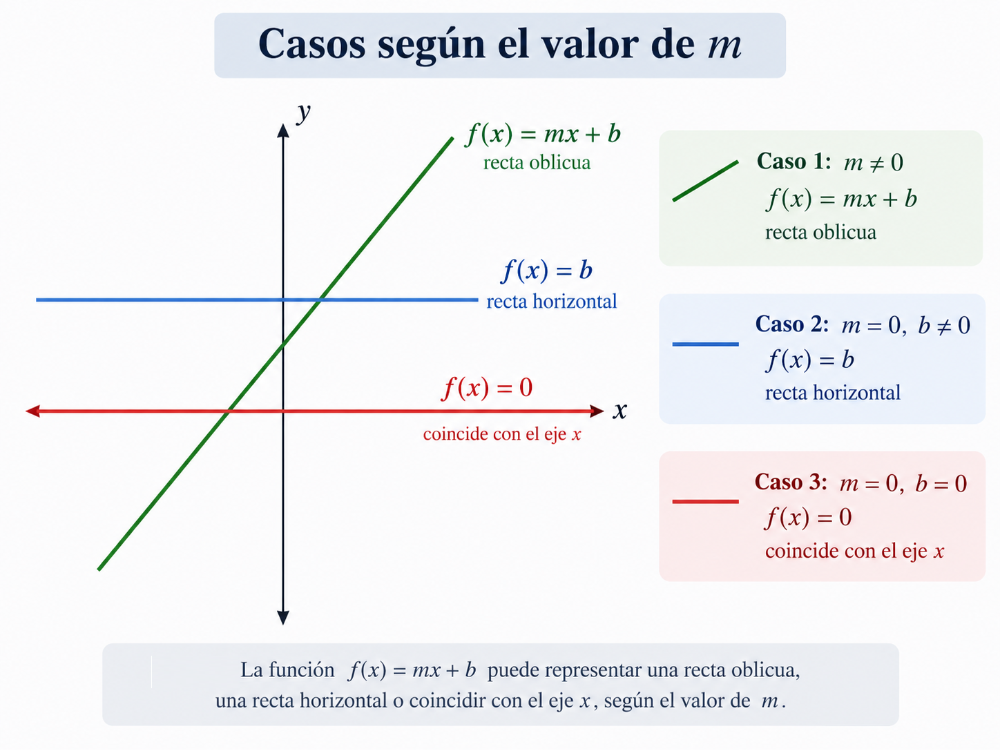
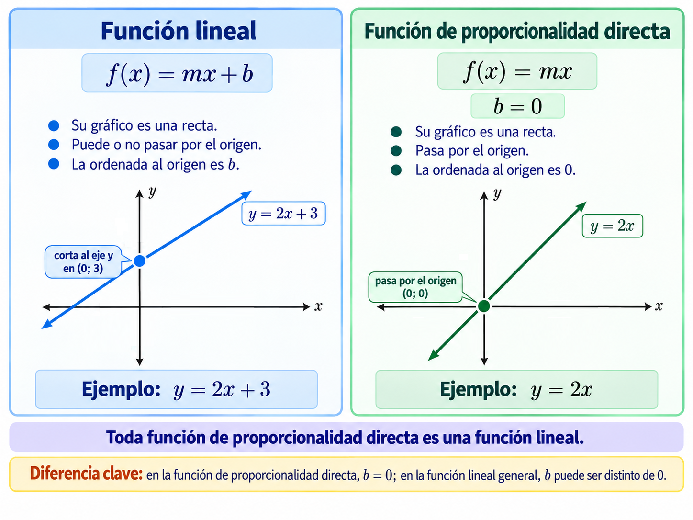
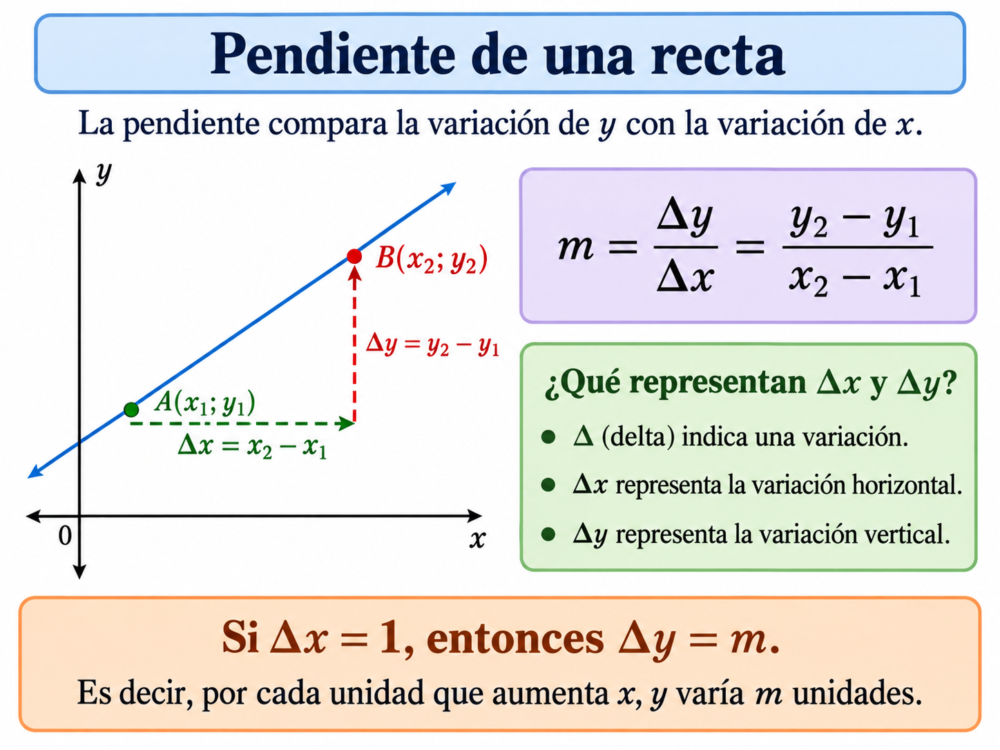
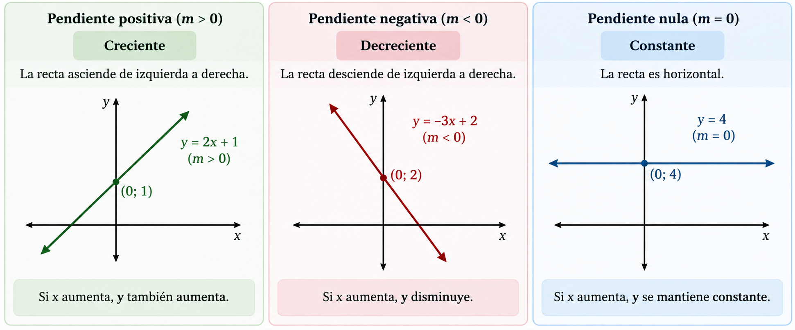
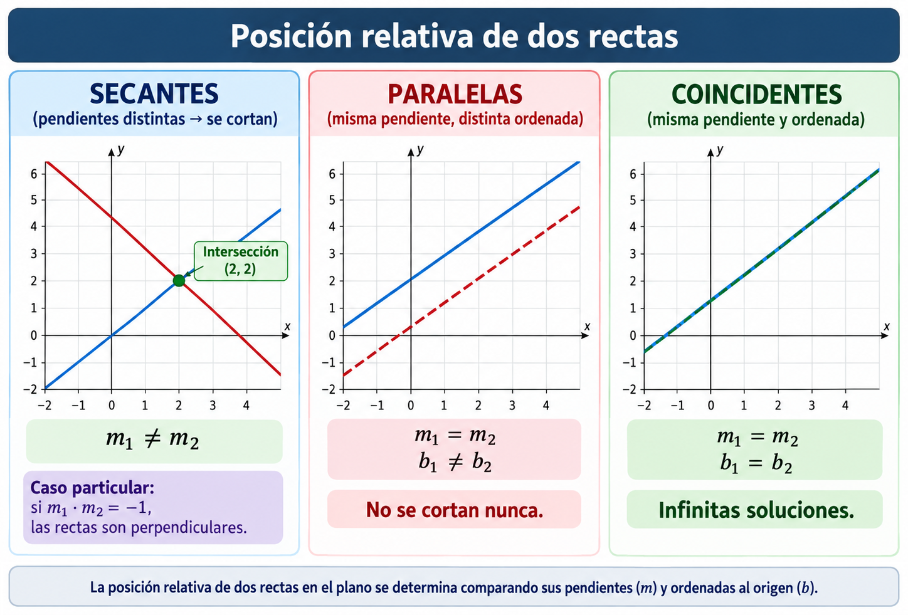
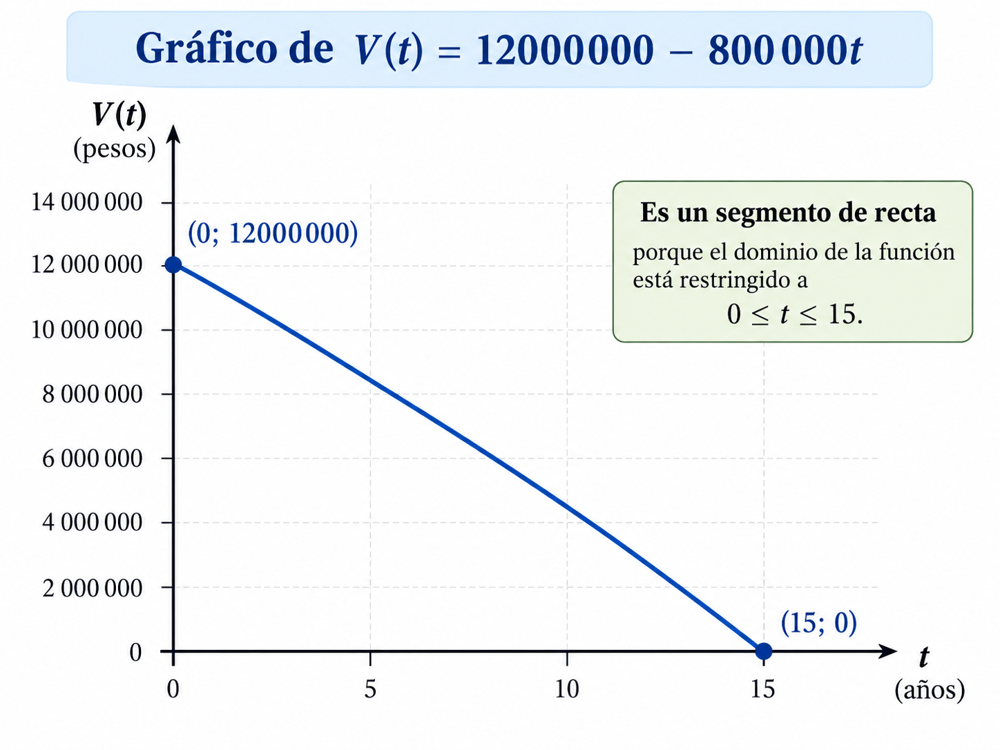
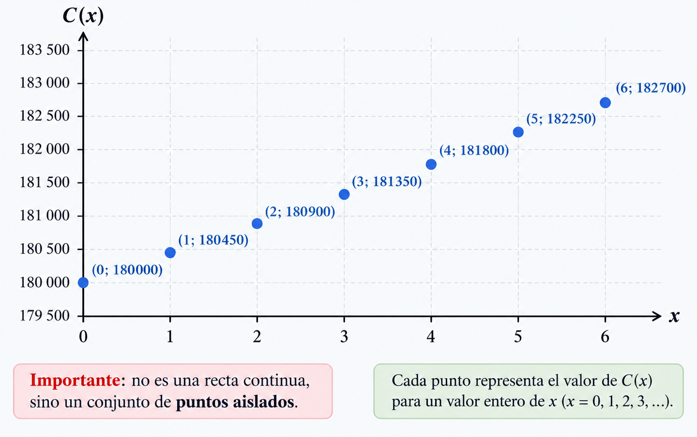

Funciones cuya gráfica es una recta
En muchas situaciones, dos cantidades se relacionan de manera tal que, cuando una cambia, la otra lo hace a un ritmo constante. Estas relaciones se representan mediante funciones cuya gráfica es una recta.
Definición y forma general
Definición
Una función lineal es una función \(f:\mathbb{R}\to\mathbb{R}\), definida por \(f(x)=mx+b\), donde \(m\) y \(b\) son números reales. Su gráfico es una recta no vertical de ecuación \(y=mx+b\).
| Elemento | Valor |
|---|---|
| Dominio | \(\text{Dom}(f)=\mathbb{R}\) |
| Codominio | \(\mathbb{R}\) |
Ejemplo
\(f(x)=3x-2\) y \(g(x)=6-x\).
\(f\) es función lineal, con \(m=3\) y \(b=-2\). Reescribiendo \(g(x)=-1x+6\), también es función lineal, con \(m=-1\) y \(b=6\).
Casos según el valor de \(m\)

Función de proporcionalidad directa (\(b=0\))
Definición
Cuando en \(f(x)=mx+b\) se cumple \(b=0\), queda \(f(x)=m\cdot x\).
Su gráfico pasa por el origen \((0;0)\).
La ordenada al origen es \(0\).
\(x\) e \(y\) son directamente proporcionales.
\(m\) es la constante de proporcionalidad.

Los dos parámetros de la recta
Los parámetros \(m\) y \(b\) determinan completamente cómo se ve la recta. Antes de ver las fórmulas, explorá cómo cambia el gráfico al modificarlos.
Pendiente
La pendiente de una recta no vertical mide su inclinación: compara la variación de \(y\) con la variación de \(x\).

- 1\(\Delta y=9-3=6\)
- 2\(\Delta x=4-1=3\)
Como \(m=\Delta y/\Delta x\), si \(x\) aumenta \(1\) unidad (\(\Delta x=1\)), entonces \(\Delta y=m\). Esto permite interpretar directamente el valor de la pendiente:
| Pendiente | Significado |
|---|---|
| \(m=2\) | cuando \(x\) aumenta \(1\), \(y\) aumenta \(2\) |
| \(m=0,5\) | cuando \(x\) aumenta \(1\), \(y\) aumenta \(0,5\) |
| \(m=-1\) | cuando \(x\) aumenta \(1\), \(y\) disminuye \(1\) |
Unidades de la pendiente: si \(x\) e \(y\) tienen unidades, \(m\) también: unidades de \(m=\) unidades de \(y\) / unidades de \(x\). Por ejemplo, si \(x\) está en horas e \(y\) en km, \(m\) se expresa en km/h.
Comportamiento según el signo
El comportamiento de la función depende de si la pendiente es positiva, negativa o nula.

Ordenada al origen
Definición
En \(f(x)=mx+b\), el número \(b\) se llama ordenada al origen: es el valor de la función cuando \(x=0\), \(b=f(0)\). El punto donde la gráfica interseca al eje \(y\) es \((0;b)\).
Ejemplo
\(f(x)=-4x+7\)
Pendiente: \(m=-4\) (decreciente). Ordenada al origen: \(b=7\). Punto de intersección con el eje \(y\): \((0;7)\).
Raíz de una función lineal
Definición
La raíz (o cero) es la coordenada \(x\) donde la función interseca al eje \(x\). Se obtiene resolviendo \(f(x)=0\):
- 1Planteamos \(0=5x-20\).
- 2Despejamos: \(20=5x\;\Rightarrow\;x=4\).
| Caso | Qué ocurre |
|---|---|
| \(m=0\), \(b\neq0\) | \(f(x)=b\) nunca es \(0\): no tiene raíces |
| \(m=0\), \(b=0\) | \(f(x)=0\) siempre: todos los reales son raíces |
De la fórmula al gráfico, y al revés
Una recta queda determinada por dos puntos distintos. Vamos a ver cómo conseguir esos puntos, y cómo comprobar si un punto dado pertenece a la función.
Determinar si un punto pertenece a una función
Definición
Un punto \(P(x;y)\) pertenece a la función \(f\) si, al reemplazar \(x\) en la función, se obtiene el valor \(y\): \(f(x)=y\).
Mientras mirás el video, prestá atención a qué hay que reemplazar y qué hay que comparar para decidir si un punto pertenece a la función.
- 1\(f(4)=2(4)+3=11\). Como \(f(4)=11\), \(P\) pertenece a la función.
- 2\(f(5)=2(5)+3=13\neq8\). Como \(f(5)\neq8\), \(Q\) no pertenece a la función.
Graficar una función lineal
Como la función está definida para todos los reales, alcanza con conseguir dos puntos de su gráfico y trazar la recta que pasa por ellos.
| Forma | Idea |
|---|---|
| Con una tabla de valores | elegir dos o más valores de \(x\), calcular \(f(x)\), ubicar los puntos y trazar la recta |
| Con \(b\) y la pendiente | ubicar \((0;b)\); desde ahí, moverse según \(m\) (como fracción): denominador = unidades horizontales (a la derecha), numerador = unidades verticales (arriba si es positivo, abajo si es negativo) |
| Con las intersecciones | ubicar \((0;b)\) y la raíz \((x_0;0)\), y trazar la recta que pasa por ambos |
Este video muestra cómo graficar con una tabla de valores. Mientras lo mirás, fijate cómo se eligen los valores de \(x\) y cómo se traza la recta a partir de los puntos.
Tip para avanzar según la pendiente: si \(m=3\) → avanzar 1 a la derecha y subir 3. Si \(m=-2\) → avanzar 1 a la derecha y bajar 2. Si \(m=2/3\) → avanzar 3 a la derecha y subir 2.
Este video repasa distintas formas de graficar una función. Mientras lo mirás, fijate qué datos necesita cada método para conseguir los dos puntos.
De los datos a la expresión, y posición relativa entre rectas
En algunas situaciones se dispone de información parcial sobre una función lineal, y hay que encontrar su expresión completa. Siempre se parte de \(f(x)=mx+b\).
Cuatro casos según los datos disponibles
Caso 1 — se conocen \(m\) y \(b\)
Es el caso más simple: con los dos parámetros conocidos, la función queda determinada.
Pendiente \(3\), ordenada al origen \(7\) → \(f(x)=3x+7\). No hay nada que calcular.
Caso 2 — se conoce \(m\) y un punto
Se reemplaza el punto en \(f(x)=mx+b\), y se despeja \(b\).
- 1Reemplazamos en \(f(x)=3x+b\): \(5=3(2)+b\;\Rightarrow\;5=6+b\).
- 2Despejamos: \(b=-1\).
Caso 3 — se conoce \(b\) y un punto
Se reemplaza el punto y el valor de \(b\) en \(f(x)=mx+b\), y se despeja \(m\).
- 1Reemplazamos en \(f(x)=4m+10\): \(18=4m+10\).
- 2Despejamos: \(8=4m\;\Rightarrow\;m=2\).
Caso 4 — se conocen dos puntos
El caso más completo: no se conoce ni \(m\) ni \(b\), hay que calcular ambos.
| Paso | Qué hacer |
|---|---|
| 1. Calcular la pendiente | \(m=\dfrac{y_2-y_1}{x_2-x_1}\) |
| 2. Calcular \(b\) | se reemplaza cualquiera de los puntos en \(f(x)=mx+b\), y se despeja \(b\) |
- 1Pendiente: \(m=\dfrac{13-4}{4-1}=\dfrac{9}{3}=3\).
- 2Con \((1;4)\): \(4=3(1)+b\;\Rightarrow\;b=1\).
Posición relativa de dos rectas
Dos rectas no verticales (de la forma \(y=mx+b\)) pueden relacionarse de tres formas, según cómo se comparen sus pendientes y ordenadas al origen.

Caso particular: rectas perpendiculares
Dos rectas no verticales son perpendiculares si el producto de sus pendientes es \(-1\): \(r\perp s\iff m_r\cdot m_s=-1\). Es decir, si una recta tiene pendiente \(m\), la perpendicular tiene pendiente \(-1/m\) (inversa y de signo opuesto).
- 1\(m_r\cdot m_s=4\cdot(-1/4)=-1\).
Modelizar con función lineal
Muchas situaciones reales se modelizan con una función lineal cuando una cantidad varía a un ritmo constante respecto de otra. \(m\) es la tasa de variación; \(b\) es el valor inicial, fijo o de referencia, según el contexto.
El dominio en un modelo
Una misma expresión algebraica puede dar lugar a gráficos distintos según el dominio considerado, porque el gráfico está formado únicamente por los puntos que pertenecen a ese dominio.
Ejemplo
La misma expresión \(f(x)=2x+1\), con cuatro dominios distintos.
| Caso | Dominio | Gráfico |
|---|---|---|
| 1 | \(\mathbb{R}\) | la recta completa |
| 2 | \([0,+\infty)\) | una semirrecta desde \((0;1)\) hacia la derecha |
| 3 | \([0,5]\) | un segmento entre \((0;1)\) y \((5;11)\) |
| 4 | \(\{0,1,2,3,4,5\}\) | puntos aislados y alineados |
Modelo con variable continua: depreciación de un vehículo
Ejemplo
Una organización adquiere un vehículo por \(\$12000000\). Se deprecia linealmente \(\$800000\) por año.
Variables: \(t=\) tiempo transcurrido (años, continua); \(V(t)=\) valor estimado (pesos).
Tasa de variación: \(m=-800000\) pesos/año (decreciente).
Valor inicial: \(V(0)=12000000\;\Rightarrow\;b=12000000\).
Función: \(V(t)=-800000t+12000000\).
Raíz: \(12000000-800000t=0\;\Rightarrow\;t=15\). Al cabo de 15 años, el valor llega a \(\$0\).
Dominio: \(t\) no puede ser negativo, y el modelo se usa hasta que \(V=0\): \(\text{Dom}(V)=[0,15]\). Como es continua, \(\text{Im}(V)=[0,12000000]\), y el gráfico es un segmento de recta.
Evaluación: \(V(5)=12000000-800000(5)=\$8000000\). Después de 5 años, el vehículo vale \(\$8000000\).

Modelo con variable discreta: costo de una capacitación
Ejemplo
Una capacitación tiene un costo fijo de \(\$180000\). Con \(200\) participantes, el costo total es de \(\$270000\).
Variables: \(x=\) cantidad de participantes (discreta); \(C(x)=\) costo total (pesos).
Ordenada al origen: el costo fijo no depende de \(x\), así que \(C(0)=180000\;\Rightarrow\;b=180000\).
Pendiente: con el punto \((200;270000)\): \(270000=200m+180000\;\Rightarrow\;m=450\) pesos/participante.
Función: \(C(x)=450x+180000\).
Dominio: \(x\) es una cantidad de personas, así que \(\text{Dom}(C)=\{0,1,2,3,\ldots\}\): el gráfico son puntos aislados y alineados.
Evaluación: \(C(150)=450(150)+180000=\$247500\).

Usar el modelo para responder una condición
Si el presupuesto máximo es \(\$300000\), ¿cuántos participantes como máximo? Se plantea \(C(x)\le300000\): \(450x\le120000\;\Rightarrow\;x\le266,67\ldots\)
Más modelos para practicar
Estos dos casos se resuelven con las mismas herramientas que ya usaste: encontrar la función a partir de dos puntos, o a partir de la tasa de variación y un valor inicial.
Errores frecuentes y síntesis
Errores frecuentes: mini auditoría
Referencia rápida
| Concepto | Fórmula / Idea |
|---|---|
| Función lineal | \(f(x)=mx+b\). Si \(\text{Dom}(f)=\mathbb{R}\), su gráfico es una recta no vertical |
| Pendiente | \(m=\Delta y/\Delta x\) · \(m\gt0\) creciente · \(m\lt0\) decreciente · \(m=0\) constante |
| Ordenada al origen | \(b=f(0)\): punto \((0;b)\) |
| Raíz | \(x_0=-b/m\) (si \(m\neq0\)) |
| Proporcionalidad directa | \(f(x)=mx\) (\(b=0\)): pasa por el origen |
| Punto pertenece a la función | \(P(x;y)\) pertenece a \(f\) si \(f(x)=y\) |
| Encontrar la función | (1) \(m\) y \(b\) · (2) \(m\) y un punto · (3) \(b\) y un punto · (4) dos puntos |
| Posición relativa | Secantes: \(m_r\neq m_s\) · Paralelas: \(m_r=m_s\), \(b_r\neq b_s\) · Coincidentes: \(m_r=m_s\), \(b_r=b_s\) · Perpendiculares: \(m_r\cdot m_s=-1\) |
| Dominio en una aplicación | variable continua → recta, semirrecta o segmento · variable discreta → puntos aislados alineados |
Una misma fórmula puede dar gráficos muy distintos: lo que cambia todo es el dominio que el contexto le permite tener.